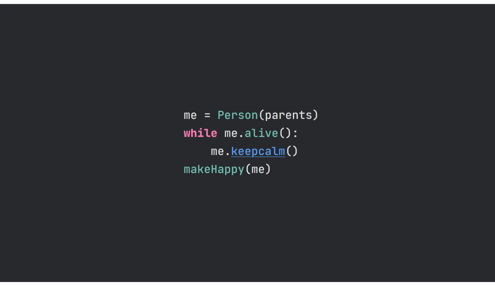
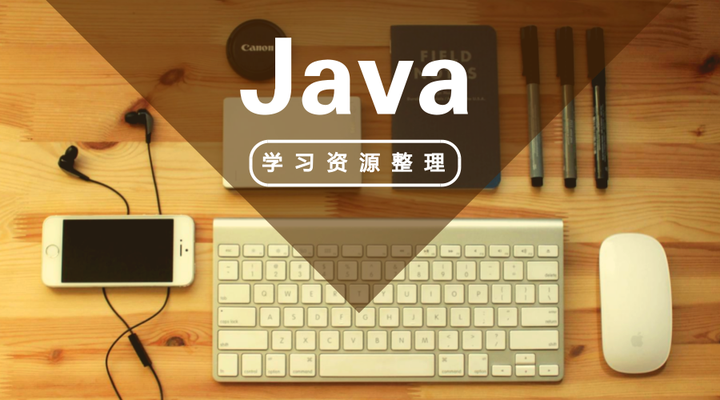
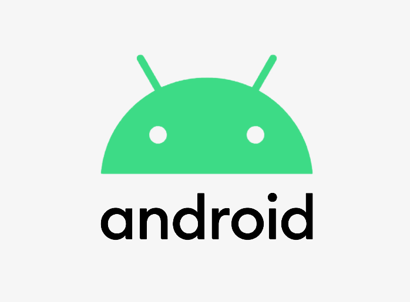

帅帅的个人小屋
用心思考问题，很多烦恼的问题就变得易解。
首页
简历

学习
游戏
软件

Java是半编译半解释性语言，它将.java的源程序文件编译成拓展名为.class的字节码文件，字节码文件可以在任何一台装有JVM虚拟机的操作系统上运行，从而达到“一次编译，随处运行”的目的。
简单的 面向对象的 分布式的 解释执行的 健壮的 安全的 结构中立的 可移植的 高效率的 多线程的 动态的和跨平台的编程语言。
Android一词的本义指 “机器人”，同时也是Google于2007年11月5日宣布的基于Linux平台的开源手机操作系统的名称，该平台由操作系统、中间件、用户界面和应用软件组成。
Android一词最早出现于法国作家利尔亚当（Auguste Villiers de l’Isle-Adam）在1886年发表的科幻小说《未来夏娃》（L’ève future）中。他将外表像人的机器起名为Android。

前端技术的发展是互联网自身发展变化的一个缩影。前端技术指通过浏览器到用户端计算机的统称，存贮于服务器端的统称为后端技术。前端开发主要职能就是把网站的界面更好地呈现给用户。
以前会Photoshop和Dreamweaver就可以制作网页，随着网站开发难度加大、开发方式多样，网页制作更接近传统的网站后台开发，网页制作更多被称为Web前端开发。前端技术包括4个部分：前端美工、浏览器兼容、CSS、HTML“传统”技术与Adobe AIR、Google Gears,以及概念性较强的交互式设计，艺术性较强的视觉设计等。

 软件
软件